Internal Guide - Albert T. Kim, CPA
Orginzation Chart
Every morning:
Open:
During Tax season, open the above screens plus:
5. Est Income tax Adobe
6. Short cut income tax return Adobe
7. Fax cover Adobe
8. P touch. label maker
How to generate the invoice
Big pic:

Details:
-> Open Quickbook
-> Click 'Customers'
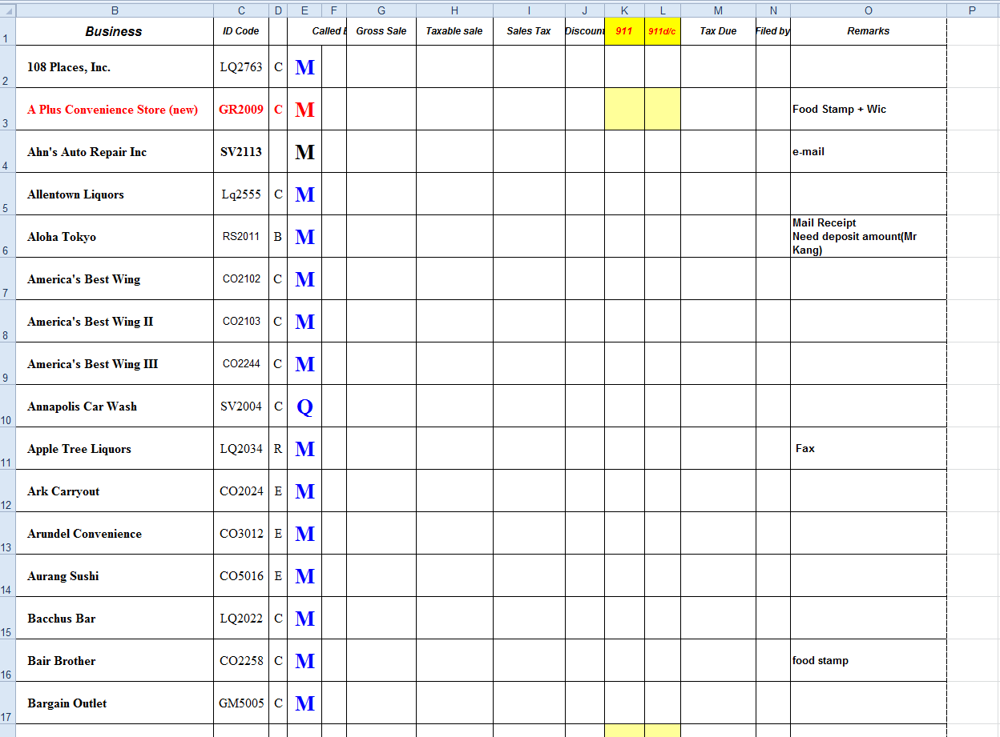
Take "Ask Carry Out" for example:
-> Right click 'Ask Carry Out'
-> Pick 'Create Invoices'
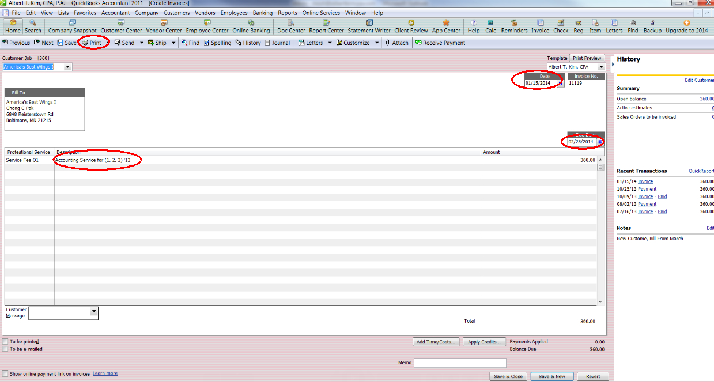
Fill in the date (current date) and due date(Quarterly: 2.28/5.31/8.31/11.30)
-> Select 'Professional Service' à Service fee Q1 or Q2 or Q3 or Q4
-> Modify the description if necessary
-> Save&Close
-> Mark 'P' in the cell 'Q1 (1,2,3)' of 'Billing 2014.xlsx',meaning has been printed and mailed out.
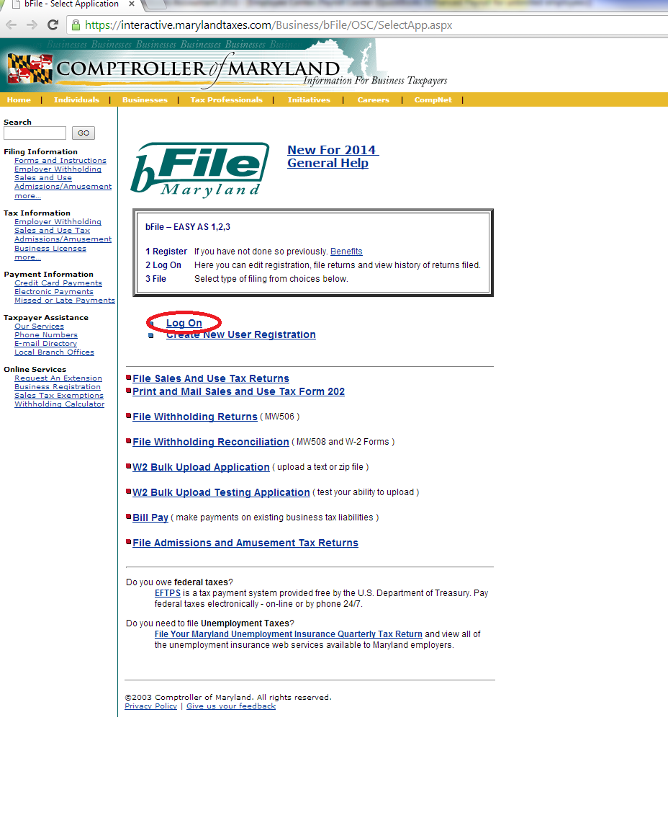
->Show Mr. Kim the invoices for review
---------------End----------------
How to mail the invoice to clients:
-> Put the invoice printed out together with a blue return envelope in a white envelope, and mail them out.
-> Mark with 'M' in 'Billing 2014.xlsx', meaning has been mailed out.
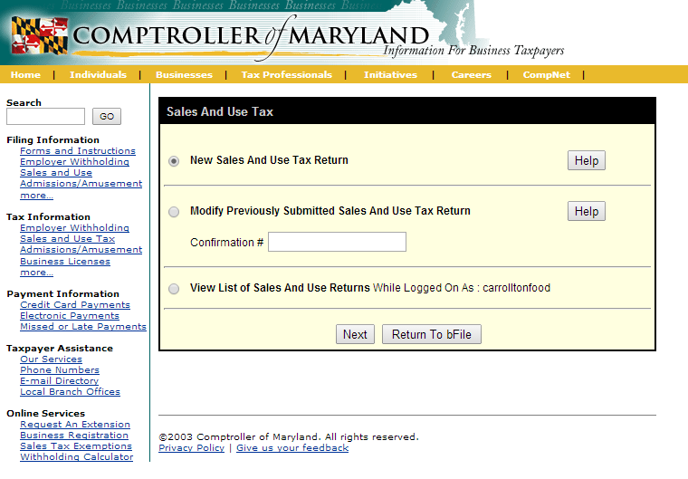
How to collect money
Big pic of Auto payment:

Details:
-> Check in Excel file 'Billing 2014', column B, "A10" means auto payment on 10th every month
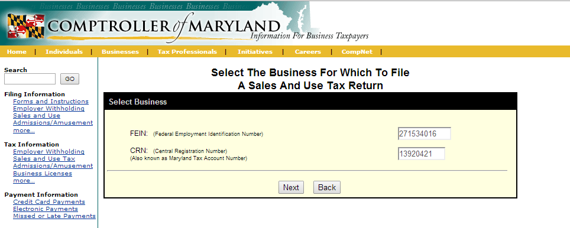
->Check the auto payment on web site: https://reports.secureexchange.net/admin/login.aspx->After login, the home page looks like below, and then click "View customer"
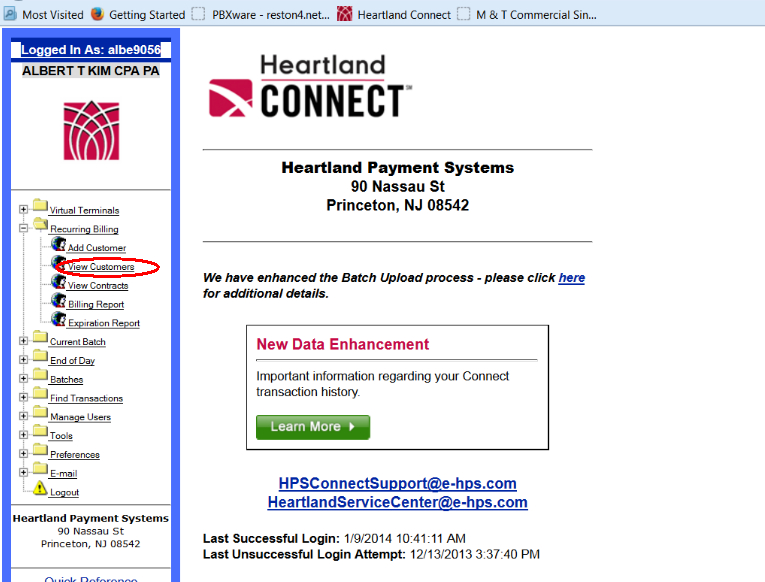
->In the pop window, select search by "Customer ID", type in Customer ID in "Search Value"-"dc3011"
->Click "Find Customers":

->At this page, Click "DC3011"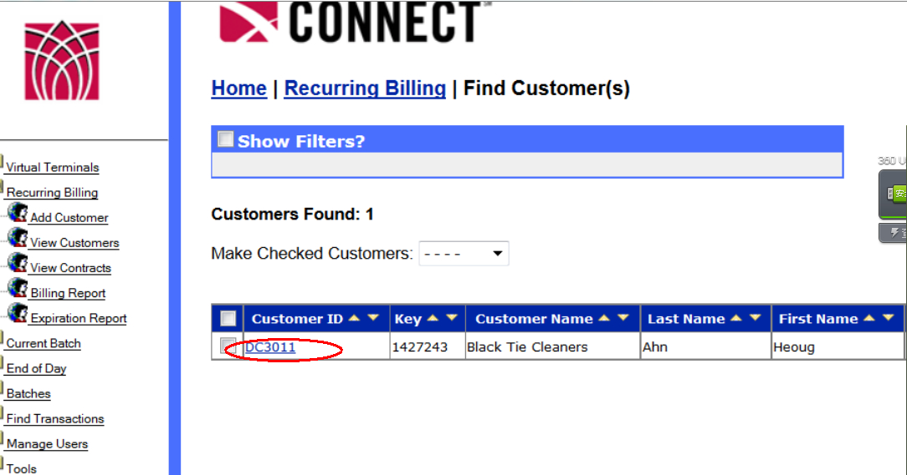
->This page shows the payment history. Double click "Transaction Date" to resort the date, and check if the payment has been approved,
also the amount is right or not:
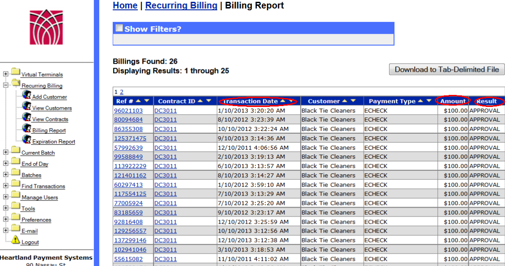
-> After make sure have received the payment, document the date of payment in the excel file "BILLING 2014" as below:
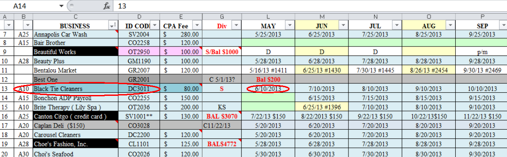
-----------End----------
How to deposit Check
Big pic :

Details:
->Collect the checks into one envelop
->Document the info of checks in both "BILLING 2014" and "1-14"(Means, Jan,2014)
BILLING 2014:
Q1- the first quarter(Including Jan, Feb, Mar)
Write down the date of deposing, the check number
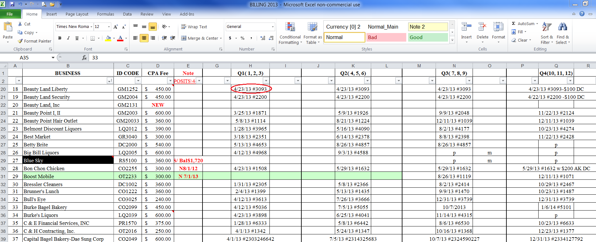
1-14 :
Write down the name, detail, check number, amount of each check, as follow:
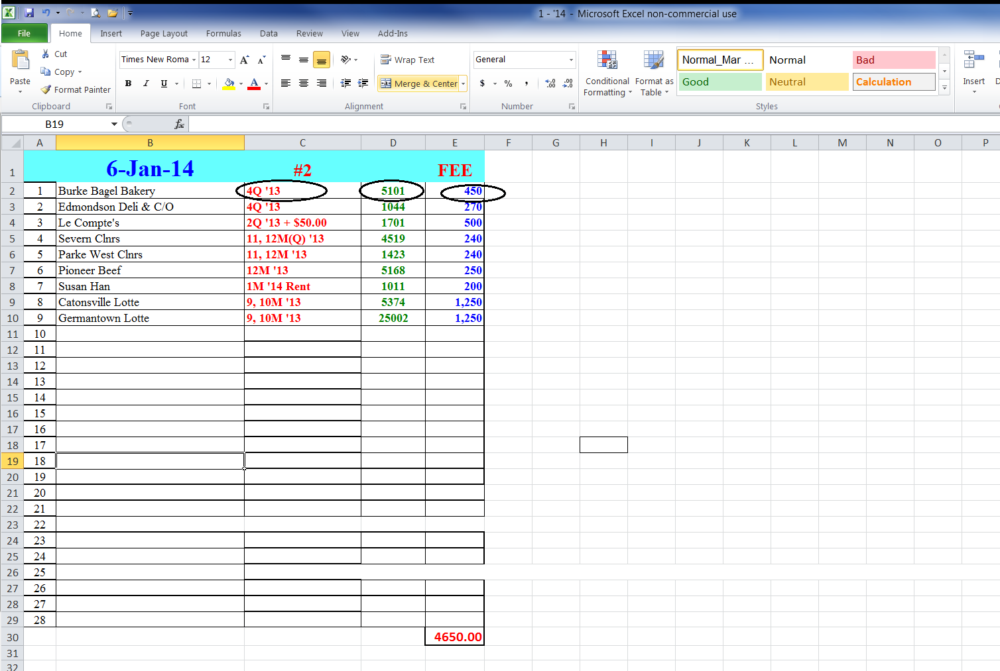
->Go to M &T web site: https://commercialservices.mandtbank.com/#
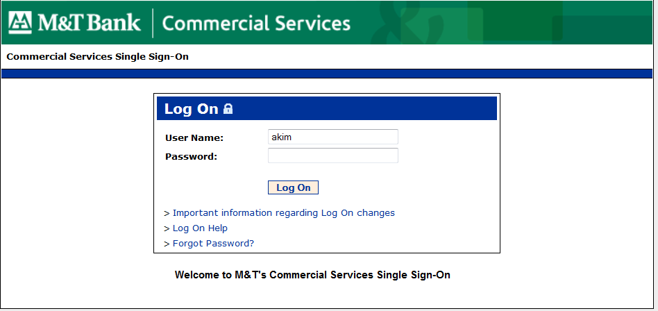
->Log on
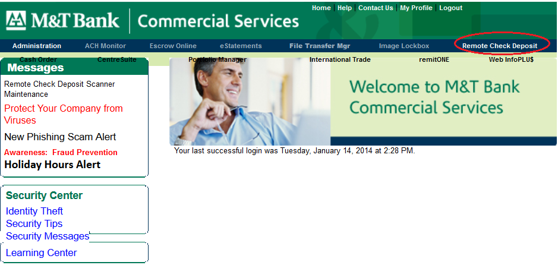
-> Click ' Create New Deposit'
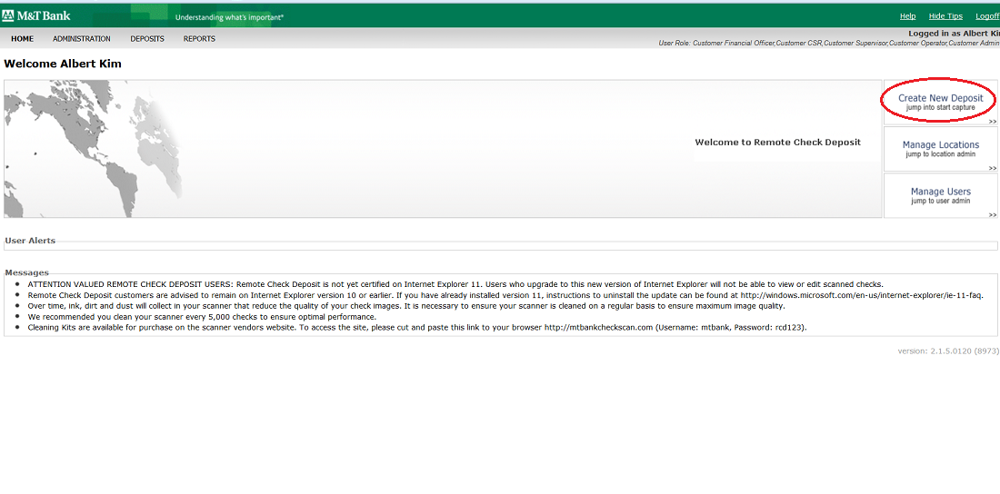
-> Check the information below, and fill in the "Number of items" as the number of checks, the "Declared amount" as the total amount of all the checks collected.
If all correct, click "Start Capture"
-> Begin to scan the checks with the deposing machine
->Check each record(focus on amount), till make sure "Balancing difference is zero"
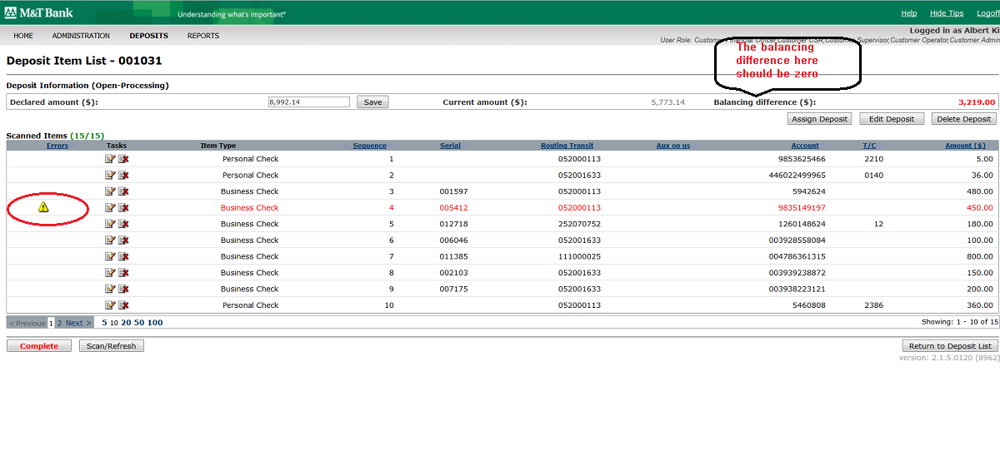
-> If there is a yellow ! sign here, meaning some error, double click that record, and goes to the following page.Change the amount manually, and save.
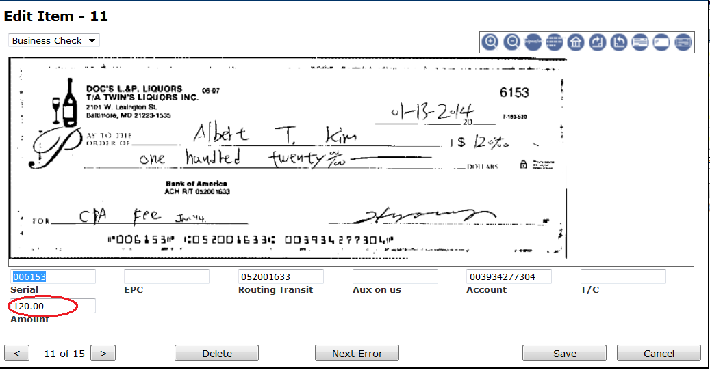
After make sure each check is correct, click button "Report View"
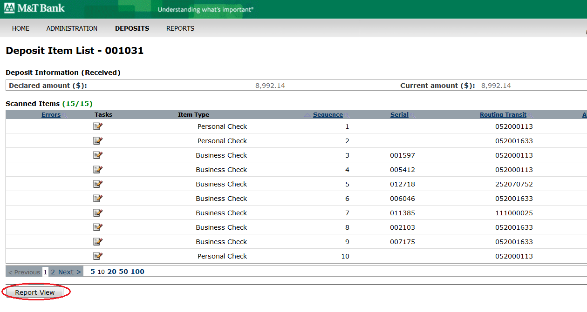
-> The final report looks like below, and print out 3 copies.
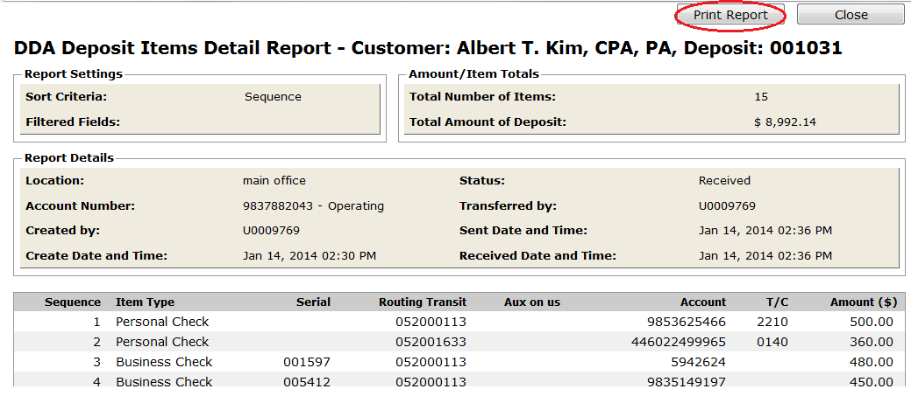
->Double check the detailed information of checks on this report with the detailed information on "1-14", make sure they are exactly same
-> Wited down the information of all the deposited checks (check Number, date in "Thank you for your payment with...") into Quick Book. [Same as "How to create the invoice"]
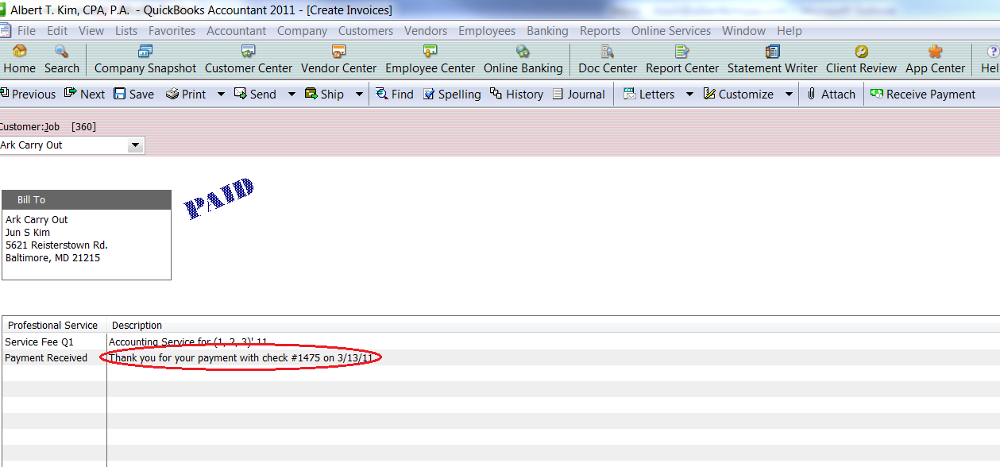
---------------------------------------End------------------------------------------
How to use "2014 Main business list. xlsx"
Location: F:/14/2014 Main business list.xlsx
Purpose: This document is used to record customers' main information.
Frequency: Open this file when start to work.

This form is listed in alphabetical order basing on the column B "Business"
The column "ID COID" consists two part: 2 letters& 4 digit number.
2 letters
Shortcut Description
CO Carryout
DC Dry Cleaners
GR Grocery
GM General Merchandise
LQ Liquor Stores
RS Restaurant
QT Other
SV Services
CL Clothes
WH Warehouse
PR Professional
4 digit number
The first number of the 4 digit number implies the type of the client, as in the column "ENTITY":
1 means C- corporation
2 means S- corporation (small corp.)
3 means Sole (individual business registration)
5 means LLC (limited liability corp. (between Sole and corp.)
For example: LQ 1050 means it's a liquor store corporation.
LO means it's a Liquor Store, the first number 1 in 1050 means it's a corporation.
The column "Status" indicates the status of this client :
N - New
S - Sold
C - Closed -> whole row will be in gray
T - Transferred
The column "FIN #" means Federal Tax Number, which is a 9 digits number. Used for Tax Return.
The column "CR#" means Company registration number, which is used for sale tax.(Trader's license application has this number, too, under the control No.)
The column "Div" implies whose client this one is:
S means "Mr. Lee"
SK means "Mr. Kang"
J means "Ms. Moon"
Blank means either Mr. Kim or Mr. H. Lee
The column "Billing" means the billing period:
M means this client is billed monthly
Q means this client is billed quarterly
The column "Legal name" means business name is on their sign board
How to use BILLING 2014.xlsx
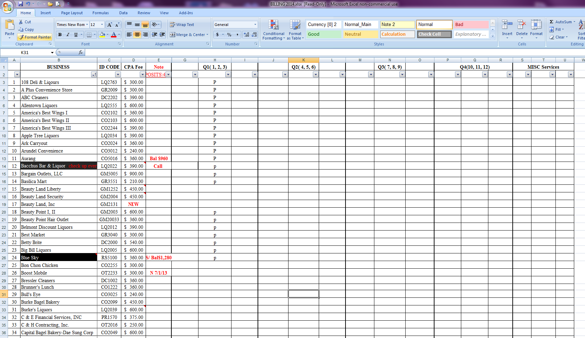
Location: F:/14/BILLING 2014.xlsx
Purpose: this file is used to track clients' payment histories.
Frequency: Open this file when start to work.
This form is listed in alphabetical order basing on the column B "Business"
"P" means having been printed out, "M" means having been mailed out.
Q & M fee update needed a Deposit Number or on check or Cash
Bill -how to check up: go to billing 2013 or 2014 check balance of Quickbook,....
Bill-how to print out: go to billing 2013 or 2014 balance, go to quickbook, type first initial , highlight ,double click on revised bill ,print out
File Cabinet:
Payroll tax including:
Payroll- 941(Employer's Quarterly Federal Tax Return):
Objective group: People who operate a business and have employees
Report department: IRS
Filling Frequency:
Deadline:
Penalties:
Failure to timely file a Form 941: 5 percent of the tax due with that return for each month or part of a month the return is late.Caps out at 25 percent.
Failure to pay tax timely or paying less: 2-15 percent of underpayment, depending on how many days late.
Others:
At the end of year, total amounts on 4 Form 941s = total amounts on the W-2 forms distributed to employees= total amounts on Form W-3.
-------------------------------------------------------------------------------------------------------------------------------------------------------------------------
Steps:
2.Go to Quickbook->reports->memorized->941

3.Document the "Total Payroll Liabilities"(highlight as following) in the notebook

4.The same time, document "Total Payroll Liabilities" in the Word form(Name: New FORM--monthly, in F:/ drive), print it out and mail out to notify clients.
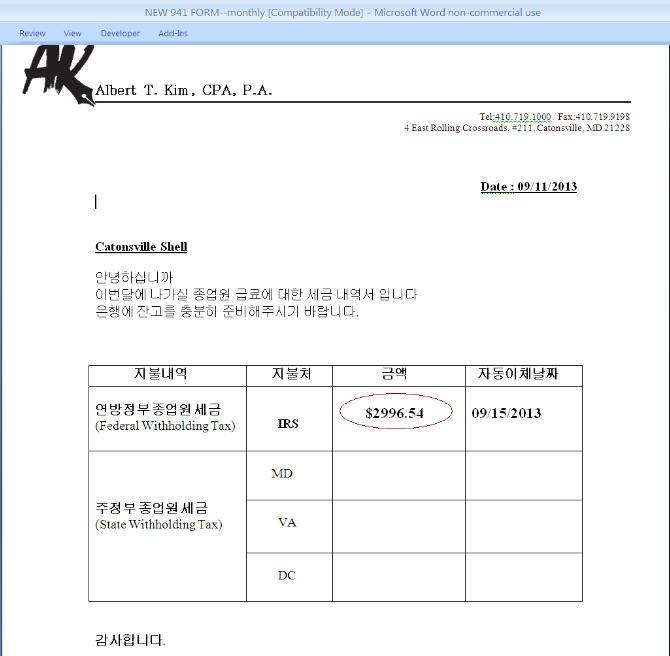
5. Pay online, using EFTPS.(See"How to use EFTPS")
6. Go to Quickbook->home->Process payroll form
->Federal form
->941
->File to cabinet and Mail to IRS
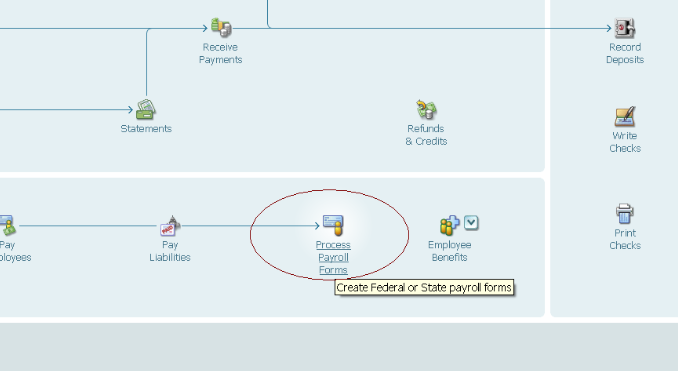

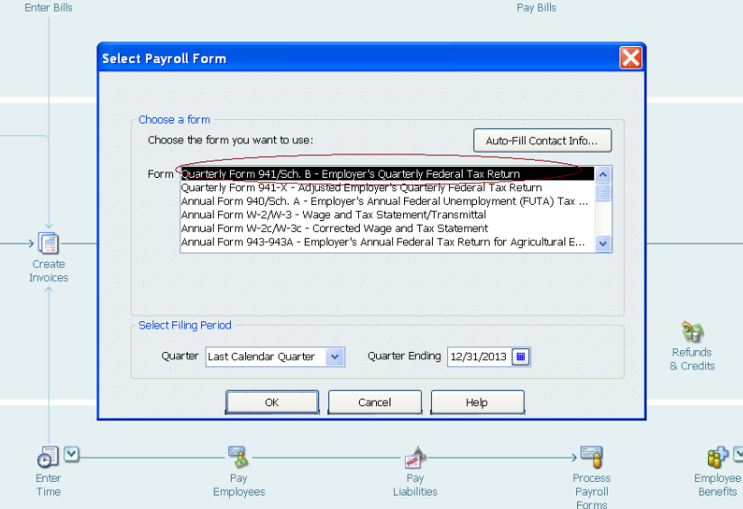
7.End
Payroll- MW506(Maryland Employer Return of Income Tax Withheld)
MW506(withholding): State, Quarterly Basis, due date is 20th,every month. ??
Objective group: It's a form used by employers to amend their employer withholding reports.
Report department: Maryland State
Filling Frequency: Monthly/Quarterly/Annual ?
Filling Due Dates:
Monthly: Due the 15th of the following month.
Quarterly: Due the 15th of the month following the end of the quarter.
Reference: http://forms.marylandtaxes.com/09_forms/Withholding_Guide.pdf
Steps:
Payroll- SUTA(State Unemployment Tax Act)
State, Quarterly Basis, due date is end of month.
Objective group: Employers
Report department: Maryland State
Filling Frequency: Quarterly
Filling Due Dates: End of month
Steps:
Sales Tax
Businesses in Maryland are required to collect Maryland's 6 percent sales tax and or 9 percent alcoholic beverage tax.
Target group: The business in Maryland
Rate: 6 percent or 9 percent alcoholic beverage tax
Period: Monthly
Due date: The 20th of the following month- with 1.2% discount
Steps:
Notice the letters in D column:
"R"- report. The clients with "R" means normally they will report the number themselves.
"E"- estimate. The clients with "E" means estimate first and then confirm with clients.
"C"- call. The clients with "C" means call them to get the number. Usually "Liquor" and "Non-Liquor"

2.Open the company file(F:/14/Main),
Go to C sheet (see below)
Calculate the tax due
Write down the Gross Sales & Discount& Tax due on the new Sales Taxes book made in step 1.
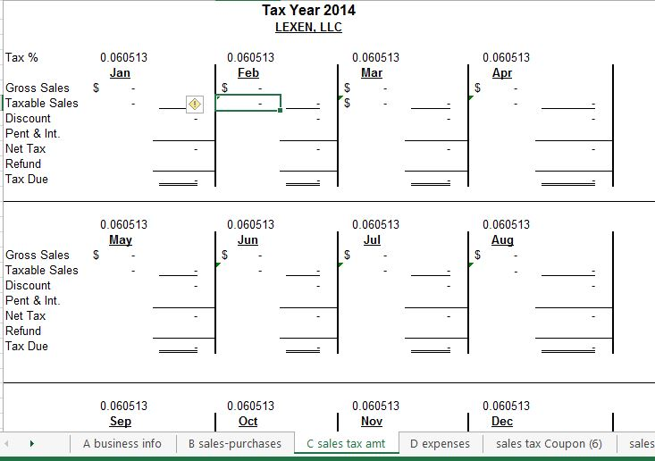
3. Pay using B-File (see "how to use B-File" )
---------------------End----------------------------------------------------------------------------------------
How to use B-file
Purpose: This online service is used to file and pay Employer's Return of Income Tax Withheld (MW506).
Information required: A valid FEIN(How to register FEIN) or Social Security number (SSN) and Maryland CRN (this is your eight-digit Maryland tax account number) are required.
A bank routing and transit number (RTN) and a depositor's account number (DAN) are required to make payments of business taxes.
How it works: The funds will automatically be withdrawn from your bank account on the date specified.
Steps:
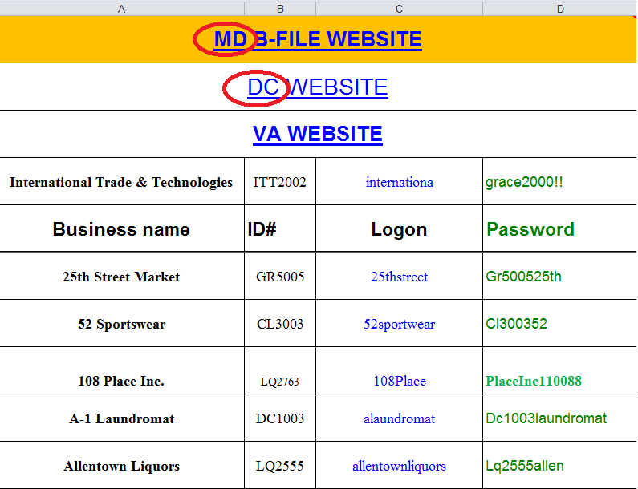
2. Goes to website of "Comptroller of Maryland" :

3. Search the "Business name" saved in the file <B-file logon list-2014.xls>
Get the logon ID and password
Log on the above website
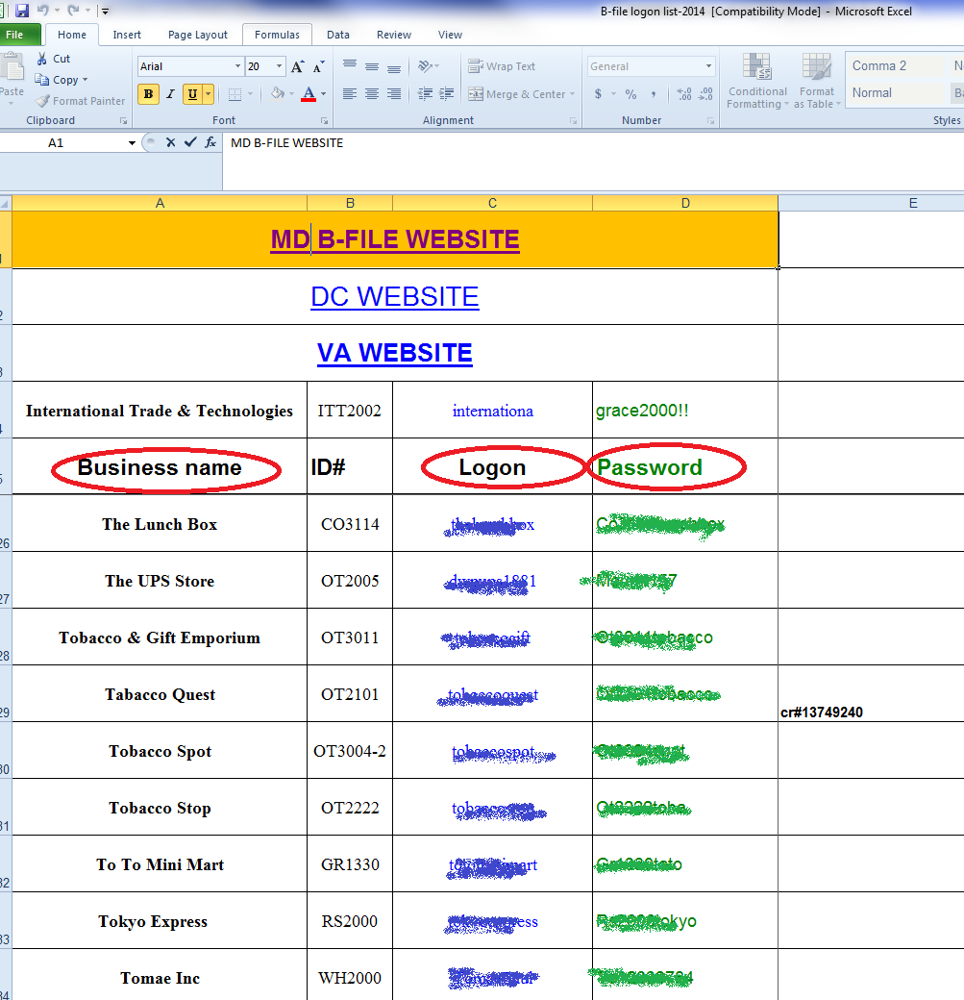
4. Select "New Sales And Use Tax Return"

5. Follow the below steps, select period, fill out the amount, submit:

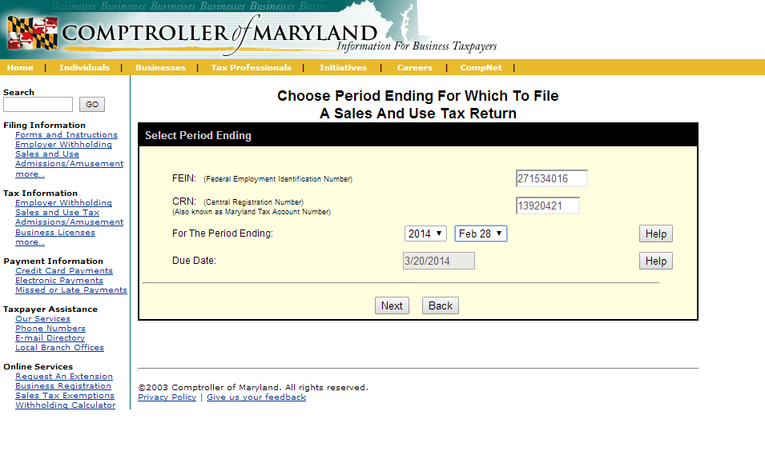
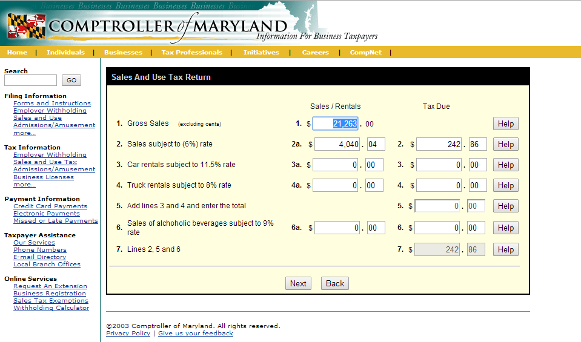
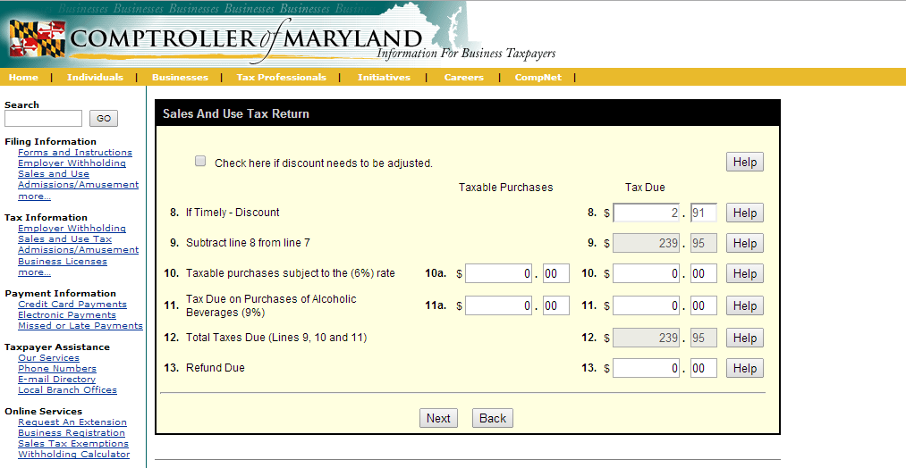
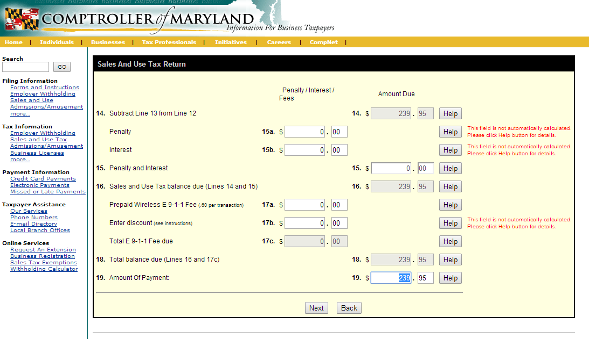
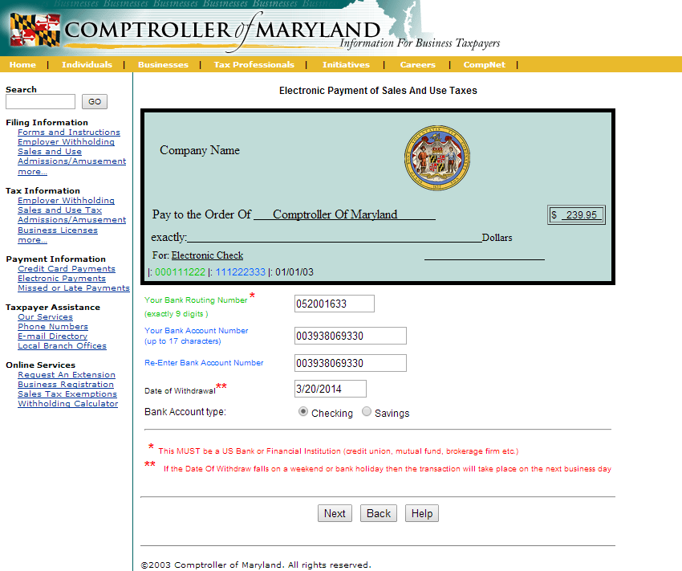
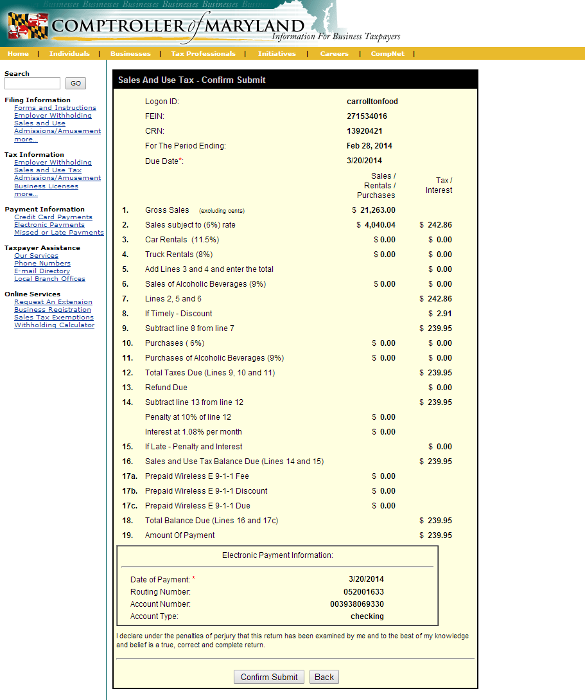
---------------------------End----------------------------------------------------------------------
How to register "federal employer identification number (FEIN)"
Purpose: For new clients, you must have a federal employer identification number (FEIN) before you can register your business
unless you are a sole proprietorship or applying for a sales and use tax license only and do not have a FEIN.
Steps:
1. Go to website: https://interactive.marylandtaxes.com/webapps/comptrollercra/entrance.asp
2. Hit "Apply for a FEIN", as shown in following pic:

3. Follow the instructions showed below:


3. Save all the documents in "File-Cabinet"
-------------------------End--------------------------------
Business License:
Retail business:
Petmits required:
1. License
2. Food permit
3.Fire permit
4. Use and occupancy permit- Baltimore Housing
5.Sales tax ID
6.Tax ID
Where to get:
1. court
2. Health department
3.Fire Department
4.Office of the Zoning Administrator
5&6. Baltimore city SDAT department
Notes:
Apply for a Use and Occupancy permit from the Baltimore Housing - One Stop Permit Center, 417 East Fayette Street. Bring the receipt you receive when you submit the application.
Below is a checklist of requirements needed to obtain a Food License:
(Food Managers must be certified within 90 days of employment; only applicable to high and moderate priority food facilities.)
It should have the charter/trade name from the State Department of Assessments and Taxation
located at 301 W. Preston St., Room 809, Baltimore, MD 21201 (Phone: 410-767-1330)
Others
Generally speaking:
Step1: Update payroll information, monthly or weekly. One by one client
Step2: Hand write down the required number in a notebook.
Required number includes:
Medicare employee
Social Security Employee
Medicare Company
Social Security Company
Step3: Make payment to IRS, and MD State. (For 941, pay bunchy. For un-employment insurance, using quickbook to pay)
Step4: Print out the payment report and mail to IRS or MD State. At the same time, file the reports to file cabinet.
Guide-sale tax:
Step 1: Estimate the sale tax number monthly.
Step 2: Call to inform clients the tax number and get agreement from clients
Step 3: Write down the tax numbers
Step 4: Make payment
Step 5:Print out the payment report and mail to